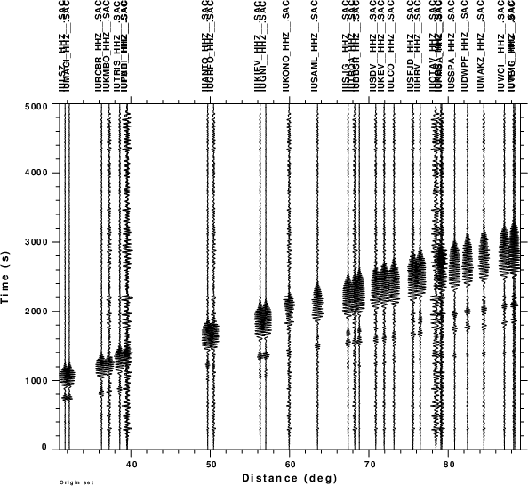
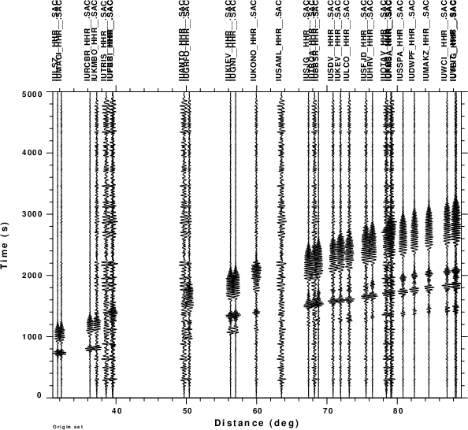

The first set of figures display the velocity traces for the mechanism described in Section 2. Each trace is plotted with the same amplitude in the figure. In the test of the detection procedure, only the vertical, Z, component traces are used. The second set of figures results from the application of a zero-phase bandpass filter implemented using the gsac command
transfer from none to none freqlimits 0.01 0.02 0.04 0.05
The sample rate of the 1s, which means that the Nuquist frequency is 0.5HZ. Although the broadband signal barely shows the surface wave train, the longer period surface waves exceeds the background noise.
| Z | R | T |
|---|---|---|
| Filtered Z | Filtered R | Filtered T |
|  |  |
The detection script was run just using the true source position (0,0), but at different possible origin times, e.g., 00h52m, 00h57m, 01h02m (which is nearest to the true origina time), 01h07m and 01h12m. The next figure plots the stack in an absolute amplitude scale, that shows that the envelope stack is a maximum near the tru origin time.